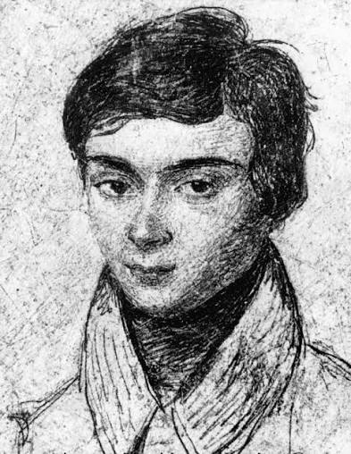

On 20 Nov 2026, Riemann Hypothesis(RH) was claimed to be solved by Claude, an AI model, and Levent Alpöge, a technical staff of Anthropic. If you know something about Math, you must know the importance of RH. For me, I have briefly understood the relation between RH and the distribution of prime numbers from my Complex Analysis course, but I am not that professional now so my understanding about RH is still limitted. And, due to the importance of primes, finding their distribution becomes a great work of Number Theory.

Details about RH
The Zeta function over the real numbers greater than $1$ is defined as:
\[ \zeta(s) = 1 + \frac{1}{2^s} + \frac{1}{3^s} + \ldots = \sum_{n = 1}^{\infty} \frac{1}{n^s}, \quad \forall s > 1 \]The great Bernhard Riemann discovered that $\zeta(s)$ has an analytical continuation over the whole complex plane, which means that there exists a meromorphic function defined on $\mathbb{C}$ such that it is equal to $\zeta(s)$ when $s$ is real and $s > 1$.
The analytical continuation of $\zeta(s)$, where we still denote it by $\zeta(s)$, can be expressed by functional equation:
\[ \zeta(s) = 2^s \pi ^{s-1} \sin\left(\frac{\pi s}{2}\right) \Gamma(1-s) \zeta(1-s) \]where $\Gamma(t)$ is the Gamma function.
After Riemann found this, he tried to analyze some basic properties of the function, such the zeros. Since there is a sine, which we have been very familiar with, we can easily know that when $s$ is negative even numbers $-2n, n \in \mathbb{N}$. These zeros are known as "trival zeros". Riemann noticed that the rest of zeros might all lie on the axis with real part of $\frac{1}{2}$(he calculated some zeros by hands). Then, he proposed that all of the non-trivial zeros must have real part of $\frac{1}{2}$, which is now known as Riemann Hypothesis.

So, the fact that RH is solved by AI really depresses the mathematicians, and the voices of AI replacing human mathematicians is keep growing larger. However, I do not think that human mathematicians would be completely useless.
In my opinion, the most essential progress of Math still relies on human mathematics, because AI do not yet perform very creatively, at least the published models do not. In detail, AI now are very good at solving problems from established results, but it is still doubtful that whether they can pioneer new fields, or innovated by the existing theories.
For example, Évariste Galois intoduced the concept of "Group" to discuss the solvability of the polynomial equations, which is:
Do the polynomial equations of degree higher than or equal to $5$ have analytical solutions, or equivalently, whether the solutions can be expressed by the usual algebraic operations of the coefficients of the polynomials.
and eventually the complete proof of this problem is expressed by Galois Theory based on Groups, known as the "Abel–Ruffini theorem". We know that the introduction of Groups led to the development of Abstract Algebra, and now the Group theory have been applied on Physics and Computer Science.

What I want to emphasize is that AI do not have this kind of groundbreaking creativity yet, and so human mathematicians remain valuable. Nonetheless, most of the math guys would indeed be replaced because not everyone is Galois or Gauss.
One more thing that I want to discuss is the constructive development of mathematical community. This thought was inspired by Terrence Tao on Mathstodon (Tao's post). In traditional mathematics, mathematicians discuss their understanding of the theories and proofs. A proof is established only after some experts reviewed the papers and confirmed that there were no more problems. During this process, the proofs are understood and the ideas are spreaded throughout the community, and become a part of the textbooks eventually. Meanwhile, some new ideas might be inspired by the proofs and then the new hypothesis and theories are proposed. This is how Math evolved.
In these days, however, the hypotheses are proven by AI in massive, and papers that no one can understand are produced. This is disastrious because we just know what, but without why, which is lack of sustainability. Just after the news of Cluade solving RH, a mathematicians Alessandro Masullo from Standford release his unfinishied proof of General RH. I actually think that his work is more valuable than that of Claude, although some problems are found.
Overall, I do not mean to stop developing AI. I want to emphasize that we need to re-examine these proofs from AI. We need to build a solid and holistic understanding to the results, and make math be sustainable.